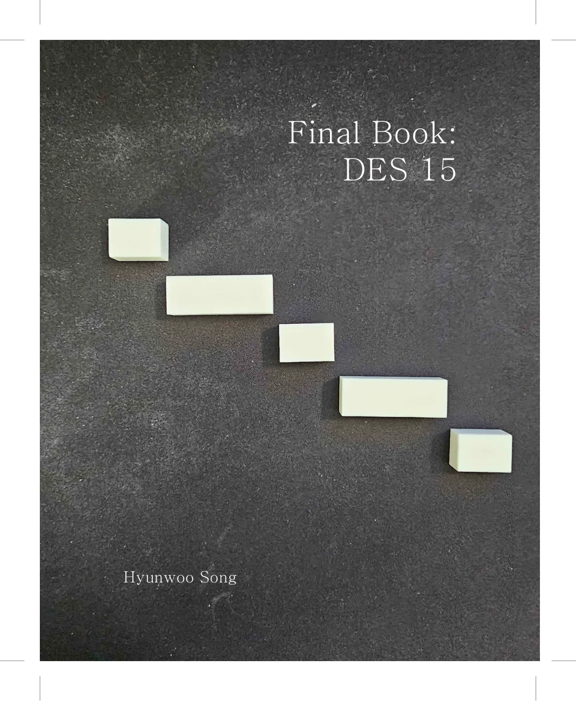
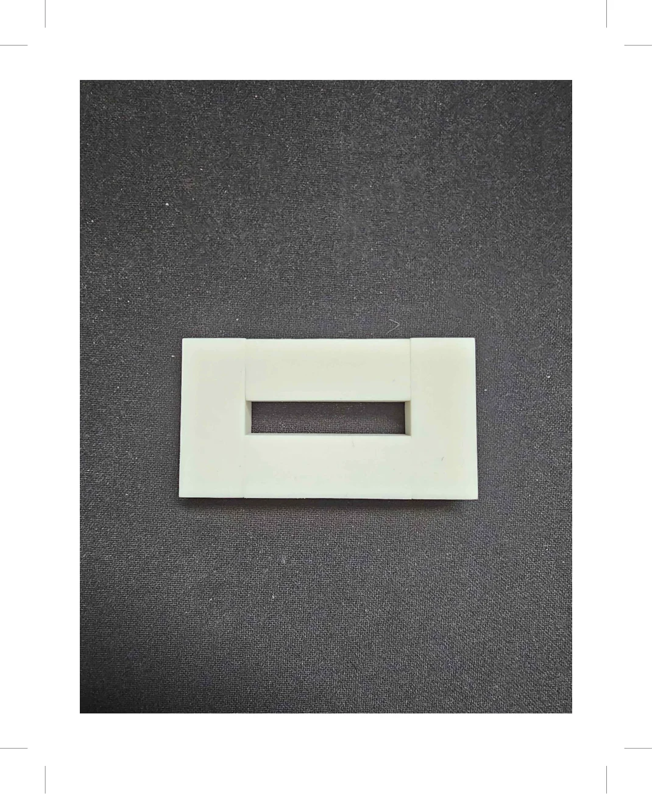
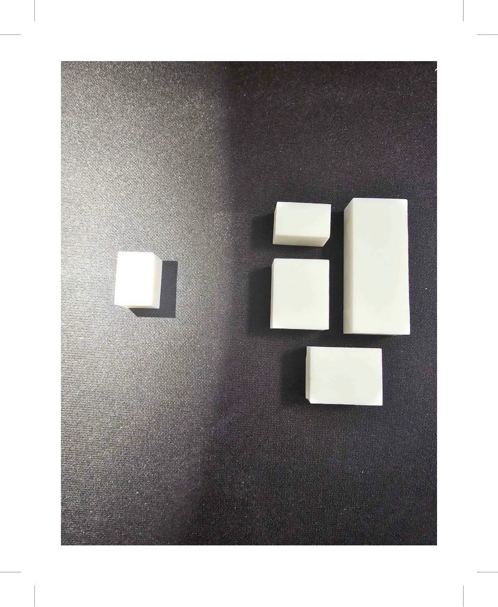
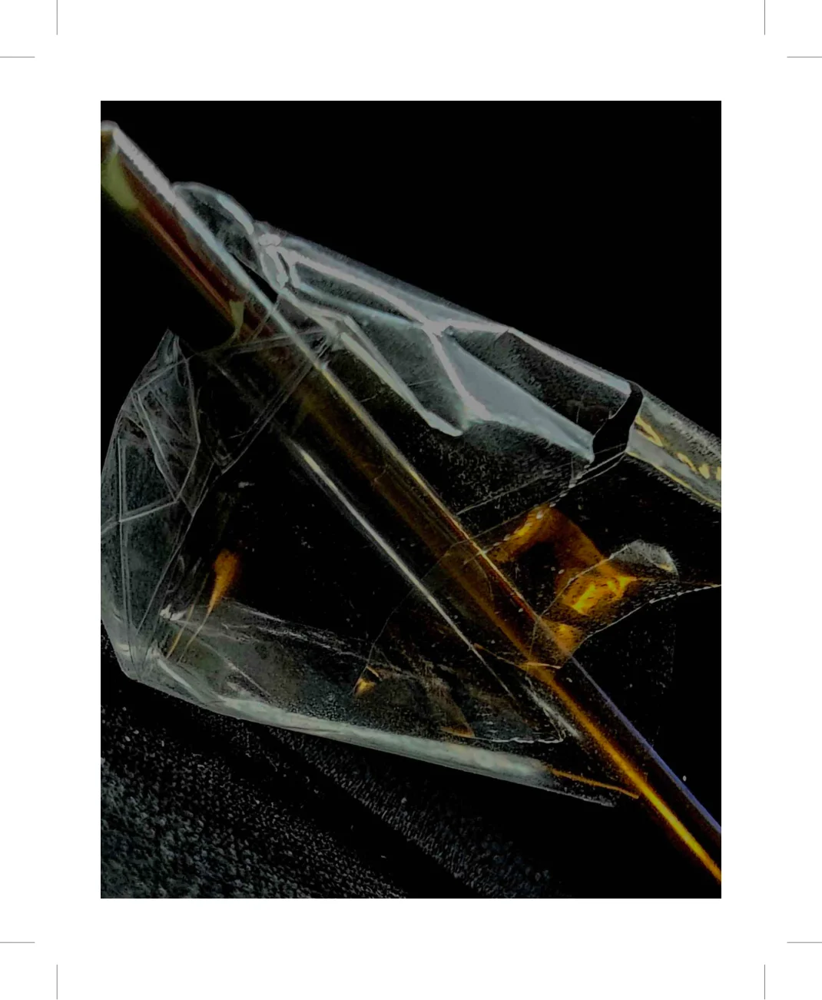
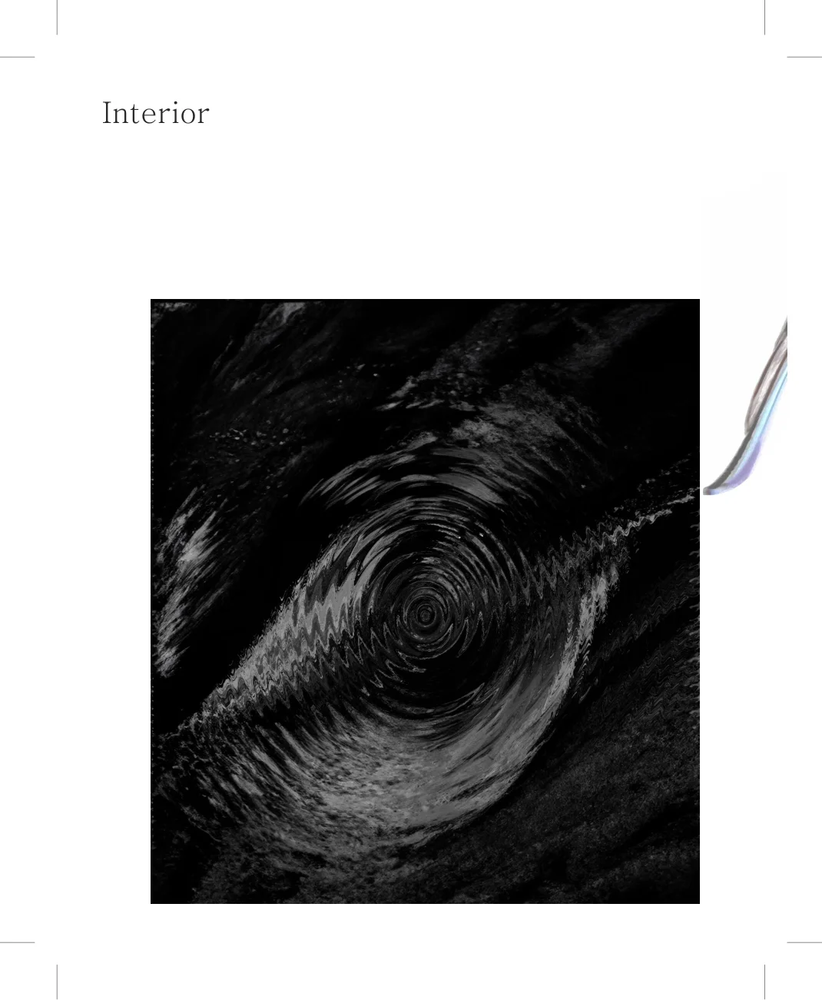
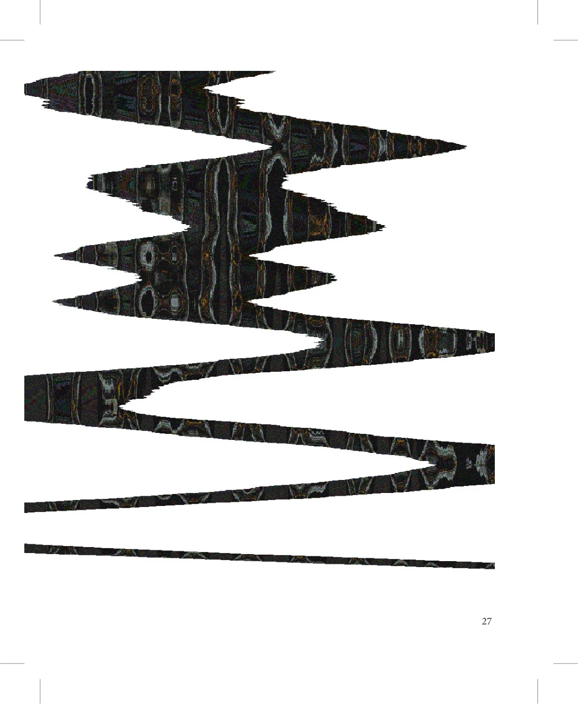
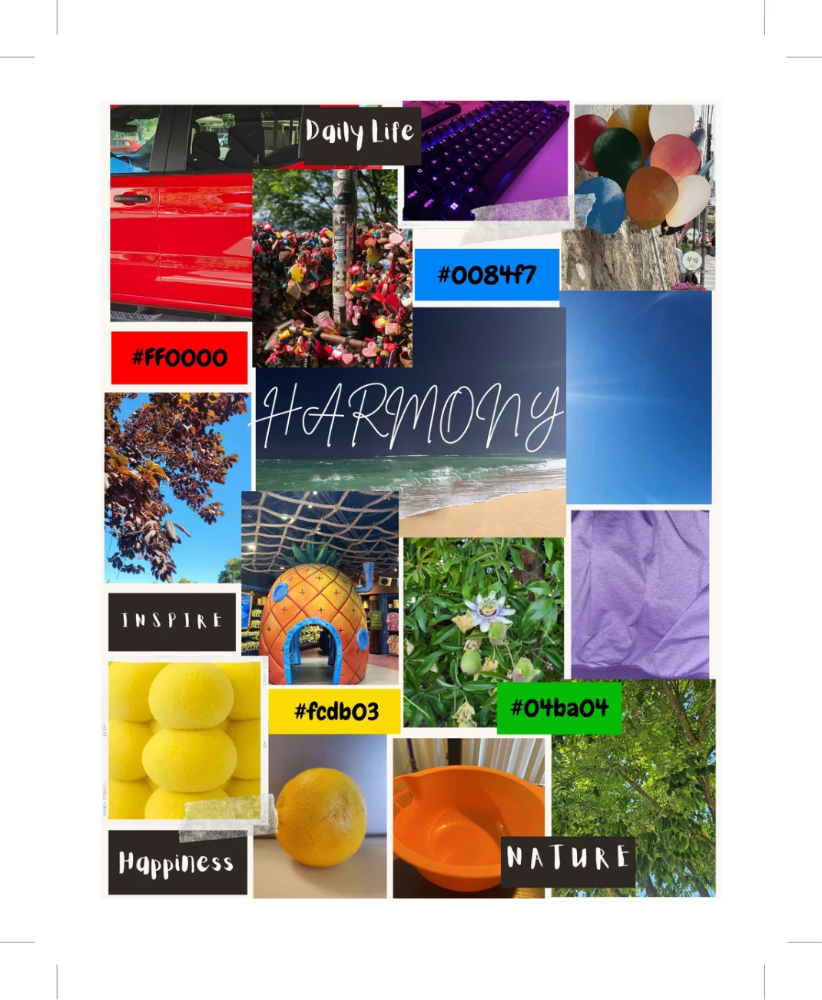
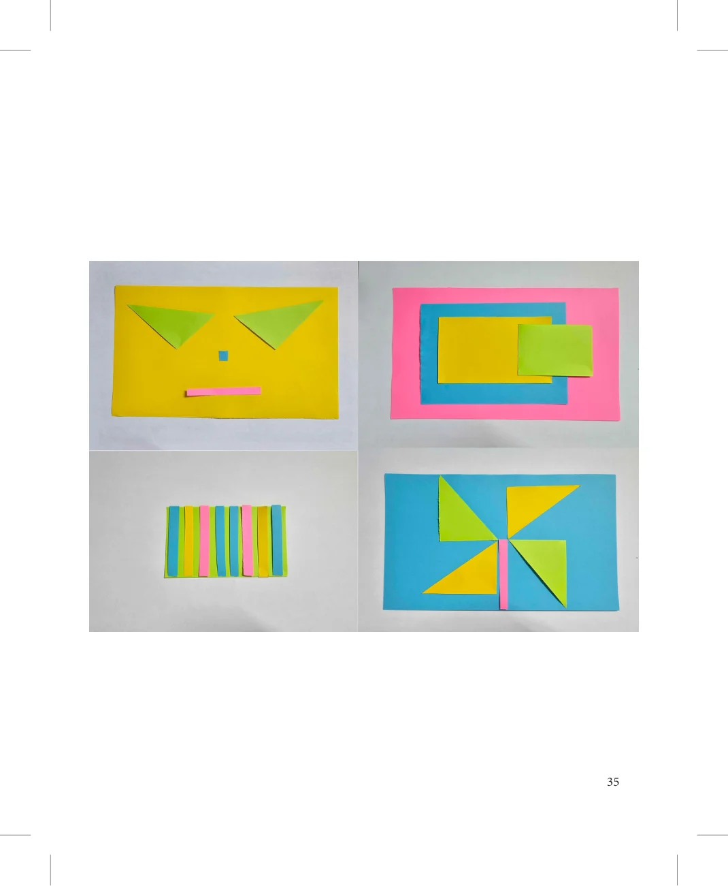
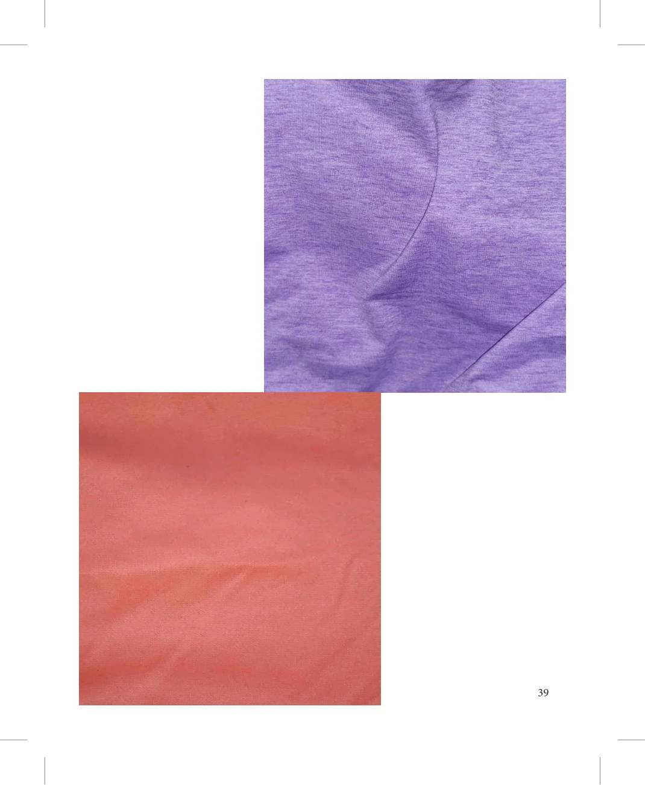
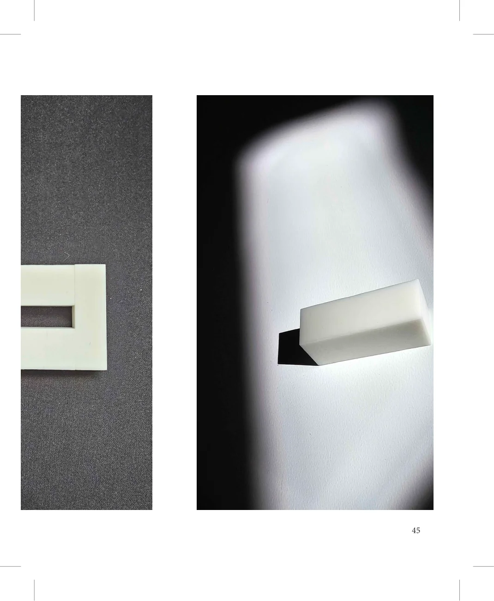

DES 15 · VISUAL DESIGN · COURSEWORK
Mirror, Connection, Color & Creativity
A 48-page visual-design book collecting experimental compositions, photography, color studies and creative exploration.

01 / DESIGN PROCESS
A visual journal of design principles
The submitted final book is structured in four sections: Mirror, Connection, Color, and Creativity. It demonstrates a progression from formal relationships and composition to color theory and expressive outcomes.









ORIGINAL SUBMISSION